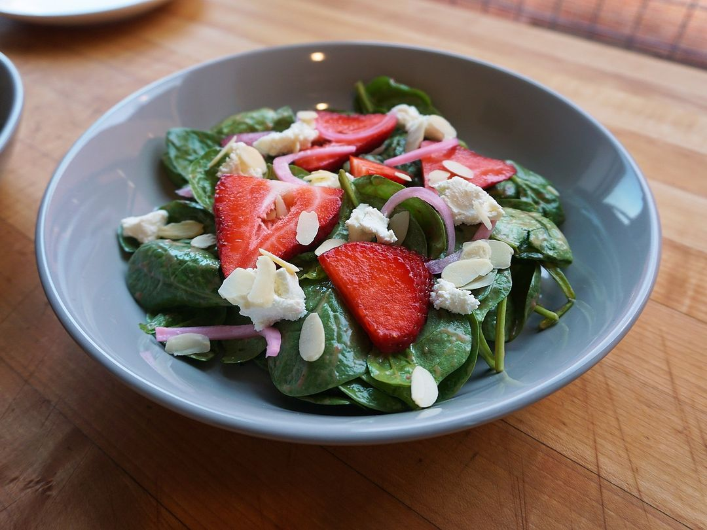
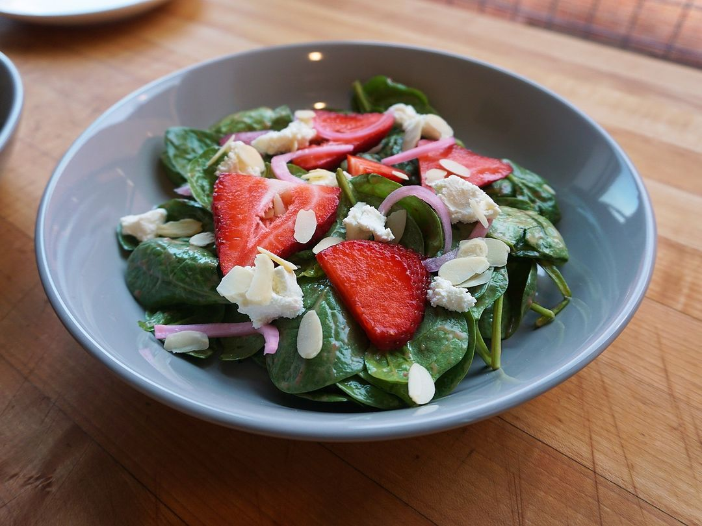

Spinach and Berry Salad
 

Description
My favorite salads are spinach salads because I never was a big fan of lettuce. This salad features berries, goat cheese, and pickled red onions. Use the best berries you
can find. Note strawberries, raspberries, blackberries, or blueberries would all work great here. You do need an immersion blender for the dressing, but
a simple balsamic dressing could be substituted if you don't have one. Serves 4 as a first course.
Ingredients
Dressing
- 5g (1 tsp) dijon mustard
- 20g (4 tsp) red wine vinegar
- 30g (a few) berries
- 1/2 tsp kosher salt
- black pepper
- 60g (4T) olive oil
Salad
- 8oz baby spinach (washed)
- 4oz strawberries, raspberries, blackberries, or blueberries
- 4oz goat cheese
- 1/4C pickled red onions (drained)
- 1/3C slivered almonds, chopped walnuts, or pecans
Steps
- Add all dressing ingredients to a 16oz mason jar or immersion blender cup. Immersion blend until smooth.
- Toss spinach in a bowl with most of the dressing.
- Divide dressed spinach among 4 salad bowls and garnish with remaining ingredients.
- Drizzle remaining dressing on the salads.